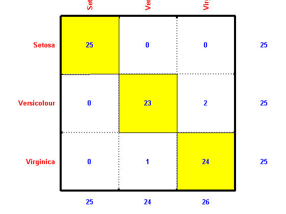
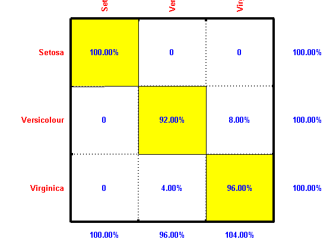
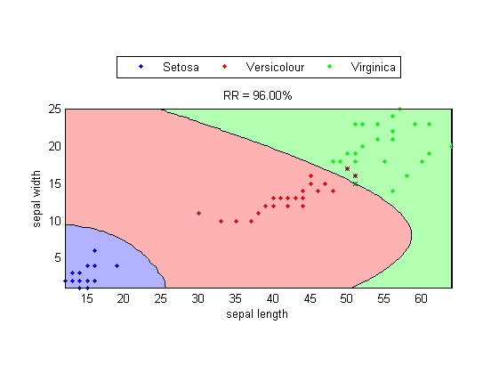
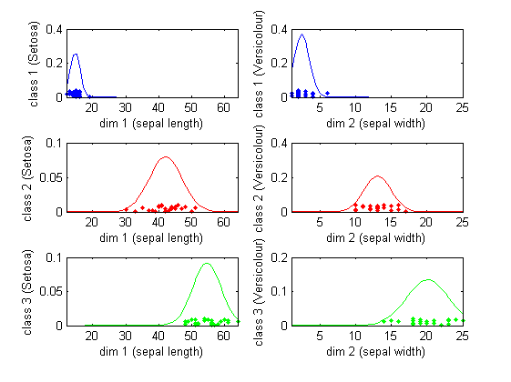
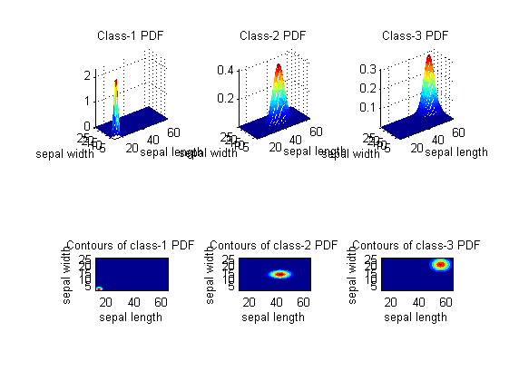
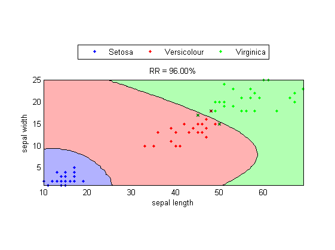
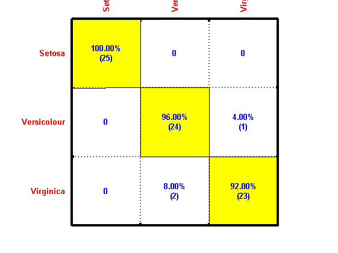

Machine Learning Toolbox: Getting Started
In this section, we shall walk you through a basic example of data classification.
Contents
Dataset Format
Before you try out the classification methods provided in this toolbox, you need to collect the dataset for train the classifier first, and then evaluate its performance. The most well-known dataset is the Iris dataset, which is available from UCI Machine Learning Repository. We can imported the dataset into MATLAB as follows:
DS = prData('iris')
DS =
dataName: 'iris'
inputName: {'sepal length' 'sepal width' 'petal length' 'petal width'}
outputName: {'Setosa' 'Versicolour' 'Virginica'}
input: [4x150 double]
output: [1x150 double]
Here the dataset is stored in a structure variable "DS" with the following fields:
- DS: the structure variable for storing all information of a dataset
- DS.input: the input part (also known as features or attributes) of the dataset
- DS.output: the output part (also known as desired classes or ground truth) of the dataset. Each entry of this vector is an index into a class denoted by DS.outputName.
- DS.dataName: a string representing the name of this dataset
- DS.inputName: a cell string that represents the names of the inputs.
- DS.outputName: a cell string that represents the names of the output classes. Note that each entry in DS.output is actually an index into this cell string. As a result, the range of DS.output should be between 1 and length(DS.outputName) inclusively.
From the varialbe DS, you should know that the dataset has 4 inputs (sepal length, sepal width, petal length, petal width) of 3 classes (Setosa, Versicolour, Virginica).
Data Visualization
The toolbox provides extensive functions to visualize the dataset. First of all, we can display the data count of each class:
[classSize, classLabel]=dsClassSize(DS, 1);
4 features 150 instances 3 classes

Here the data count for each class is 50.
We can plot the classes w.r.t. the features:
dsProjPlot1(DS);

From the above plots, it is obvious that we can use features 3 or 4 to separate the first class (Setosa) easily. However, there is no single feature that can separate classes 2 (Versicolour) and 3 (Virginica).
We can also project the data instances onto two feature dimensions:
dsProjPlot2(DS);

The scatter plots show the data distribution after projecting onto 2 features. Again, the data instances of class 1 are well separated from those of the other two classes.
We can even go one step further to plot the projection onto 3 feature dimensions:
dsProjPlot3(DS);

The scatter plots show the data distribution after projecting onto 3 features. Since our visual preception is based 2D, the "feel" of the distribution may depend on your viewing angles. Fortunately you can click and drag each plot to change the viewing angle.
In fact, you can use LDA (linear discriminant analysis) to find the best projection for classification. The command is "lda".
Classifier Design
Once we have the dataset, we can design a classifier and evaluate its performance. For simplicity, we shall design a naive Bayes classifier (NBC) for the Iris dataset. For easy visualization, we shall only use inputs 3 and 4 of the dataset for classification.
As a common practice in pattern recognition, we need to partition the dataset into a training set and a test set. Usually we use the training set for designing a classifier, and the test set for evaluate the performance of the classifier. We can use the command cvDataGen to create these two sets:
DS.input=DS.input(3:4, :); % Only take dimensions 3 and 4 for 2d visualization cvData=cvDataGen(DS, 2, 'full'); % 'full' to generate the datasets directly (not indice only) TS=cvData(1).TS; VS=cvData(1).VS;
Note that cvDataGen is commonly used for generating datasets for m-fold cross-validation as a more precise estimate of the recognition rate. But here we are only m=2 to obtain the training and test sets.
Now we can use TS for designing a classifier, and VS for performance evaluation. Here we use the naive Bayes classifier in this guided tour. We use the command nbcTrain to train the classifier:
[nbcPrm, logLike, recogRate, hitIndex]=nbcTrain(TS);
fprintf('Recog. rate = %f%%\n', recogRate*100);
Recog. rate = 96.000000%
In other words, nbcTrain can be used to train a classifier, and the returned outputs are
- nbcPrm: parameters for the classifier
- logLike: log likelihood of each data instance
- recogRate: recognition rate of the dataset
- hitIndex: indices of correctly classified data instances
Here the recognition rate is 96.00%, which is satisfactory to some extent. However, it should be noted that this is the so-called inside-test accuracy, which is usually overly optimistic. Moreover, the overall recognition rate does not describe how the misclassifications occur. To get a breakdown list of each class' performance, you need to display the confusion matrix:
computed=nbcEval(TS, nbcPrm); confMat=confMatGet(TS.output, computed); subplot(1,1,1); opt=confMatPlot('defaultOpt'); opt.className=TS.outputName; opt.mode='dataCount'; confMatPlot(confMat, opt);
In the above matrix plot, each row is a true class while each column is a predicted class. From this matrix, it is obvious that there are 6 misclassifications, with 2 instances of Versicolour being misclassified as Virginica, and 1 instances of Virginica being misclassified as Versicolour.
If we want to see the recognition rates along each class, we can plot the confusion matrix in terms of percentages:
opt.mode='percentage';
confMatPlot(confMat, opt);
 Here it becomes obvious that the recognition rates (the diagonal elements of the matrix) for these 3 classes are 100%, 92%, and 96%, respectively.
Decision Boundaries and scatter plot
Since we are only using two inputs of the dataset, it is possible to plot the decision boundaries of these 3 classes in a 2D space. In other words, you can simply another extra parameter to nbcTrain and it will plot the decision boundaries together with the data instances used for training the classifier:
TS.hitIndex=hitIndex; % Attach hitIndex to DS for plotting nbcPlot(TS, nbcPrm, 'decBoundary');
Note that the second input argument to nbcTrain is used to specify the parameters for training the NBC. Here we used an empty matrix to indicate that default parameters are adopted for training. The third nonzero input argument requests the command to perform more visualization, including
- Display the scatter plot
- Draw the decision boundaries of these 3 classes
- Put a cross on the misclassified instances
PDF Plots
In NBC training, we assume that the PDF (probability density function) for each class is obtained as the product of the PDFs over all input dimensions. To plot the PDF of each class along each dimension, you can use the command nbcPlot:
nbcPlot(TS, nbcPrm, '1dPdf');
 As mentioned earlier, the class PDF is obtained as the product of the PDFs over all input dimensions. Again, we can use nbcPlot to display the 2D class PDF:
nbcPlot(TS, nbcPrm, '2dPdf');
 Performance Evaluation
Up to this point, we have only analized the classifier based on the training set TS. If we want to have an objective evaluation of the performance, we need to use VS, which is an "unseen" dataset for the classifier. The recognition rate based on VS is:
[computedClass, logProb, recogRate, hitIndex]=nbcEval(VS, nbcPrm);
fprintf('Recog. rate = %f%%\n', recogRate*100);
Recog. rate = 96.000000%
In this case, the outside-test recognition rate is also 96%. We can also plot the decision boundaries:
VS.hitIndex=find(VS.output==computedClass);
nbcPlot(VS, nbcPrm, 'decBoundary');
 The confusion matrix (in both data counts and percentage) can be shown next:
computed=nbcEval(VS, nbcPrm); confMat=confMatGet(VS.output, computed); opt=confMatPlot('defaultOpt'); opt.className=VS.outputName; opt.mode='both'; confMatPlot(confMat, opt);
In this case, the outside-test RR is the same as the outside-test RR. In general, the outside-test RR is lower than the inside-test RR since the classifier has "seen" the training set already.
Copyright 2011-2012 Jyh-Shing Roger Jang.